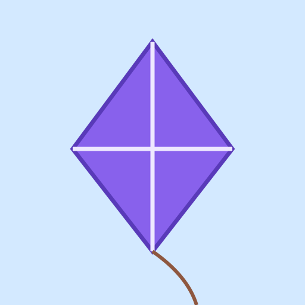
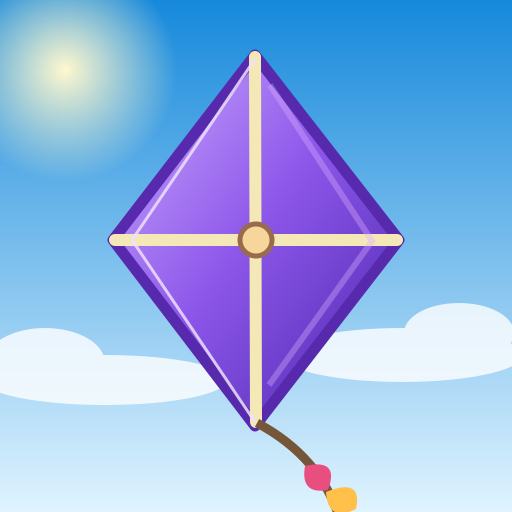
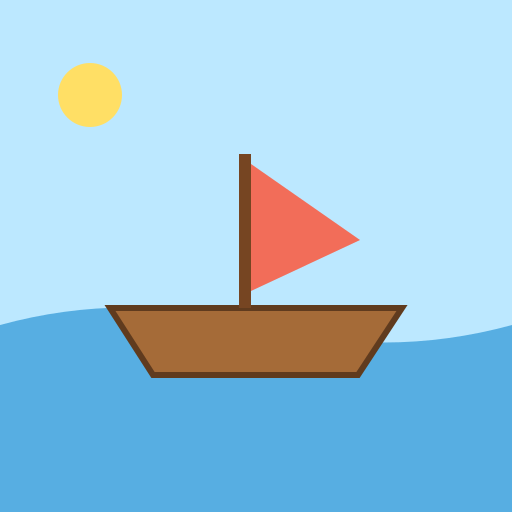
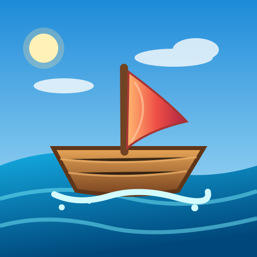
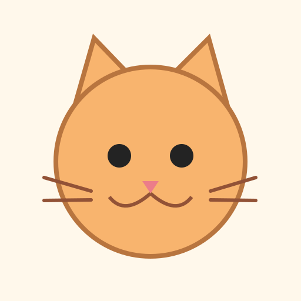
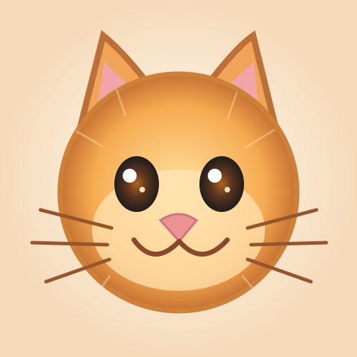

01 / Kite


ARTIST & BUILDER HANDBOOK
A repeatable production pipeline for artwork, traits, metadata and a Bankr-orchestrated launch. The live demo below shows the critical difference between flat SVG shapes and Canvas rendering with dynamic fabric shading and motion.
Explore the live renderer ↓01 / LIVE GRAPHICS TRANSLATOR
The right-hand Canvas renders at 60fps where supported. The kite uses moving cloth highlights, an animated tail, gradient shading and atmospheric scenery. The boat uses moving water and sail; the cat uses breathing/bobbing and blinking.






This is a working procedural Canvas demo inspired by the existing kite renderer—not an automated AI image-to-image conversion. Production artwork still needs layered assets and art direction. These animated previews are not yet exported NFT assets.
02 / THE REUSABLE FACTORY
Artists provide an SVG, sketch or layered raster master plus a visual brief. The starter shapes are references—not a restriction on quality or style.
Separate backgrounds, subjects, clothing, accessories, foreground effects and motion layers. Each layer has alignment and allowed combinations.
A deterministic seed selects weighted traits. Incompatible combinations are filtered; rarity and duplicates are checked before mint.
Canvas composites source art, gradients, fabric highlights, lighting, effects and optionally frame-by-frame animation.
Export high-resolution images or supported animations, NFT JSON metadata, trait attributes and a manifest, then store using stable URIs.
Bankrbot follows the launch instructions, deploys the native Bankr token and Net-integrated ERC-721A collection, then reports verified addresses.
03 / THE BANKR LAUNCH MODEL
Aspyn’s Hood Turtles example used netprotocol.app/skill.md to have Bankr deploy a Net-integrated ERC-721A collection. This project adds a separate native Bankr ERC-20 launch in the same agent workflow. Multiple chain transactions may be required. The token and NFTs share a project, but are not automatically ERC-404 equivalents.
Every paid action requires owner authorization. Contracts, mint costs, maximum supply, wallet limits, creator reserve, art URI and signer are checked before deployment. A successful deployment isn't proof of an OpenSea sale; receipts and marketplace indexing are separate checks.
Read the exact Bankr launch runbook ↗ · Token/NFT linkage explained ↗
04 / WHAT THE ARTIST CONTROLS
Choose the visual language: painterly, pixel, anime, 3D, illustrated, fabric, metallic, or something entirely new.
Supply high-quality character designs and accessories at a consistent size and pivot point. No ugly programmatic SVG stand-ins.
Specify variations, rarity, exclusions and how layers stack. Preview contact sheets and approve representative combinations.
Choose still image, short loop or interactive preview. OpenSea animation support and final file type must be validated before release.
The current repo contains a deterministic Canvas compositing starter and this interactive proof of concept. Production-grade asset packs, batch export, animation encoding, automatic uploads and deployment integration are still tasks—not features we claim are done.